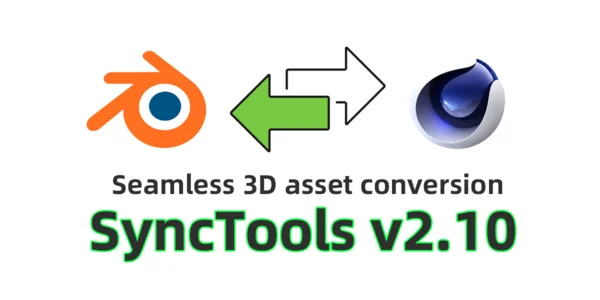
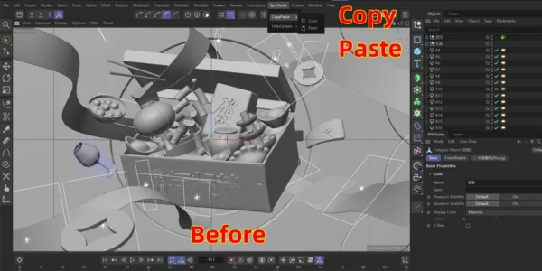
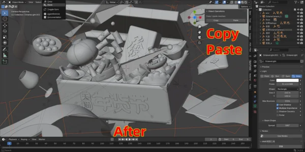
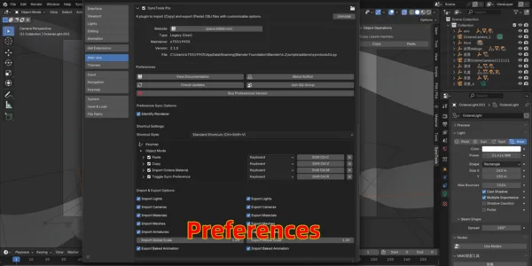
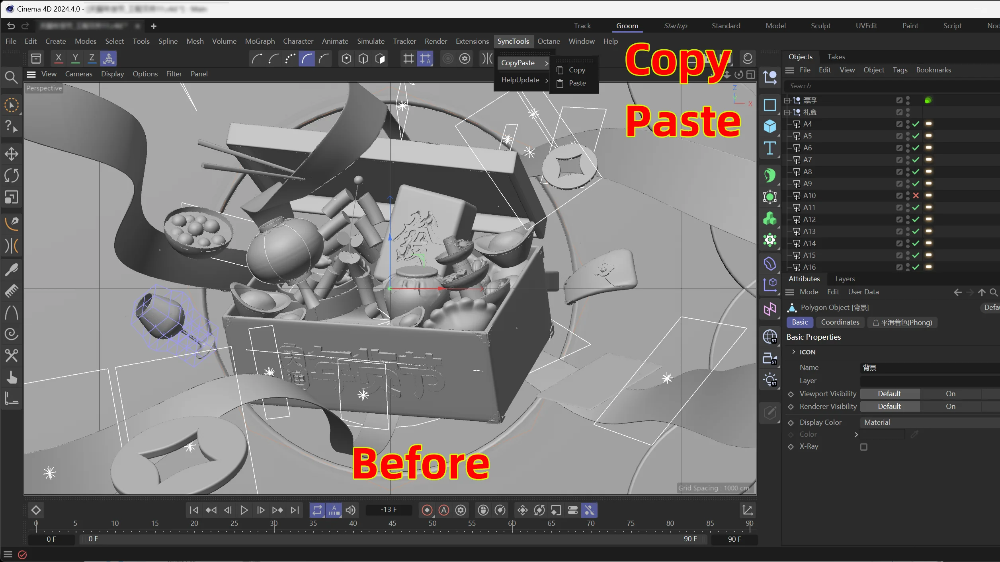
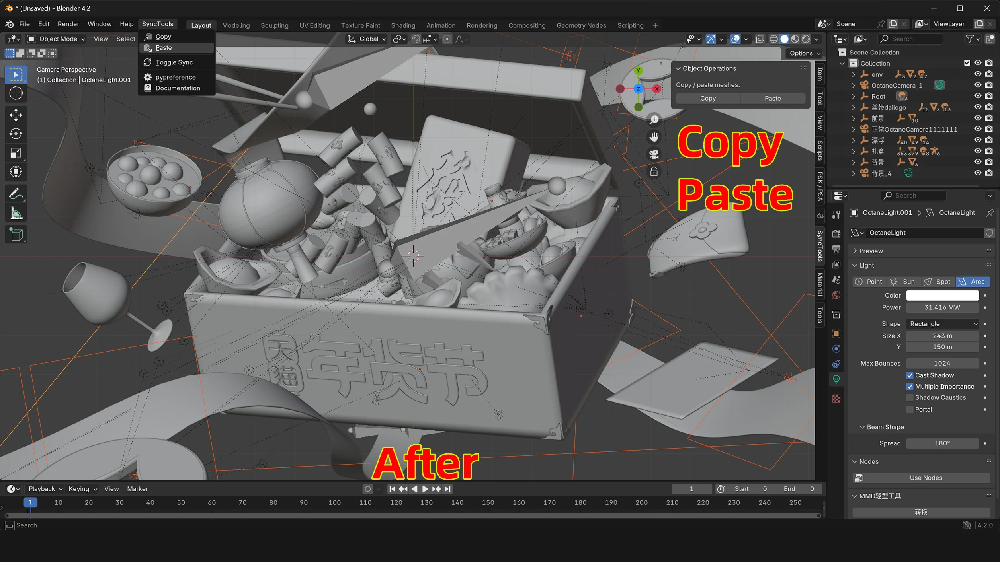
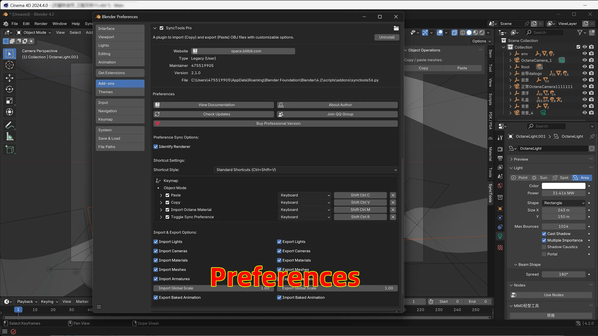

SyncTools Pro for Cinema 4D
$20.00相册





产品信息
描述
SyncTools Pro for Cinema 4D
支持范围
SyncTools 支持以下 3D 资源类型的双向导入和导出：角色、动画、样条线、材质、模型、相机、灯光和项目设置。
多 DCC 平台支持
所有插件采用统一的数据交换协议，实现跨平台无损资产转换和真正的多软件协作工作流。
插件介绍
您是否厌倦了频繁切换不同的 3D 软件、处理重复性任务以及在复杂操作上浪费宝贵时间？ Sync Tools 旨在优化您的工作流程并简化 3D 设计过程。
作为一款以效率和生产力为核心的工具，它可以显著提升您的日常工作体验，让您的 3D 艺术家生活更轻松。
Try “SyncTools Pro" now—it will change the way you work in Cinema 4D and Blender.
这些场景是否扼杀了您的创造力？
❌ 在 Blender 和 Cinema 4D 之间传输资产时浪费数小时手动对齐比例/轴向
❌ 由于软件间帧率或分辨率设置不匹配导致的渲染灾难
❌ 每次迁移后从头重建复杂的 Octane/Redshift 材质节点
❌ 动画曲线被破坏得面目全非，迫使逐帧修复
主要功能
1. 快速复制粘贴
一键在 C4D 和 Blender 之间无缝传输对象。 无需手动调整繁琐的比例、轴向或层级结构。 节省大量时间，专注于真正重要的事——您的创意愿景。
2. 核心项目参数自动同步s
自动同步核心项目参数，包括焦距、分辨率、图像宽高比和帧率。 确保不同软件间项目设置一致，提高跨平台工作流的准确性和效率。
3. 广泛材质支持
该插件涵盖几乎所有主流渲染器的材质导入和导出，包括 Octane、Redshift 等。 它还支持材质选择集的导入和导出。
4. 灯光支持
导入灯光时，Sync Tools 准确还原灯光强度，自动生成相应的灯光节点和标签，并保留灯光的颜色和纹理信息。
5. 完整动画支持
该插件支持动画导入，完全保留关键帧和曲线手柄，确保无损动画精度。
6. 持续优化与更新s
Sync Tools 持续优化升级中。 所有用户可免费升级到最新版本。
7. 持久导入导出功能
即使在导出或导入操作后关闭软件，插件仍可正常使用导入和导出功能。



支持 Blender 基金会
我们相信回馈让我们的工作成为可能的社区。 每个月，我们都会将插件收入的一部分用于支持 Blender 基金会。 感谢您帮助我们为开源创意的未来做出贡献。
更新日志
v2.10 更新说明
服务器维护期间，请暂时使用云存储手动更新！
修复了一些错误，请大家更新！
1. 支持 Blender 4.3.1&Cinema 4D 2025.1
2. 添加自定义快捷键偏好设置支持
3. 添加非标准材质的自动检测与修复功能
4. 自动为导入的 OC 材质添加映射节点
5. 导出算法逻辑优化
6. 修复 Blender 导入 OC 透射材质的错误
7. 修复 Blender 导入 OC 金属材质的错误
V1.3 更新说明
2. 插件更新功能已上线（支持自动更新、手动更新和静默更新）。
3. OC 材质支持更多节点。
4. 用户体验优化（允许重复和实例材质名称）。
5. 识别渲染器（勾选后可直接导入 OC 材质）
1.21 更新说明
2. 导入 4D 文件支持 Mac
3. 添加拖放事件（可直接拖放导入 C4D 文件）
4. 添加图标和帮助文档
5. 重大性能优化和错误修复
1.2 更新说明
2. 增加动画、灯光模型等资产类型的选择性导入和导出
3. 功能稳定性和错误修复
文档
安装 Guide for Sync Tools
Prerequisites
- Cinema 4D Minimum 版本: Cinema 4D R21 or higher
- Blender Minimum 版本: Blender 3.3 or higher
- 支持ed Operating 系统: Windows, macOS, Linux
安装 Steps
1. 下载 and Extract
- After downloading the plugin, right-click the archive and extract it.
- The extracted folder will contain two subfolders, one for Cinema 4D and one for Blender.
Cinema 4D 安装
定位 the 插件 目录:
- Default path:
C:\Program Files\Maxon Cinema 4D 2024\plugins - If the folder does not exist, manually create it.
- Default path:
复制 文件:
- 复制 the entire plugin folder to the
pluginsdirectory mentioned above.
- 复制 the entire plugin folder to the
导入ant 注意s:
- 权限s Issue: Avoid installing the plugin in other drives as it may fail due to permission restrictions.
- No 复制 安装: Do not install the plugin in both the configuration folder's
pluginsdirectory and the Cinema 4D rootpluginsdirectory simultaneously.
Blender 安装
访问 Blender 偏好设置:
- Open Blender, go to
编辑 > 偏好设置 > 插件. - Select
安装...from the 偏好设置 window.
- Open Blender, go to
安装 插件:
- Navigate to the downloaded plugin file and select it.
- For older versions of Blender, click
安装 插件directly.
导入ant 注意s:
- No Extraction Required: For Blender, install the plugin directly without extracting it.
- 安装 Both: To ensure proper functionality, install the plugin for both Cinema 4D and Blender.
Verification
After installation:
- 重启 Cinema 4D and Blender.
- In Cinema 4D, you should see Sync Tools in the top menu or the 扩展s panel.
- In Blender, check the 插件 list under 偏好设置 to confirm that Sync Tools is enabled.
Now you’re ready to start using Sync Tools!
How to Use the 插件
After installing the plugin and restarting the software, you will find Sync Tools in:
- Cinema 4D: 定位d in the top menu.
- Blender: 访问ible from the 插件/扩展s menu.
Main Operations
- 复制: Copies the selected object(s) to Cinema 4D & Blender.
- 粘贴: 粘贴s the copied object(s) into the current scene.